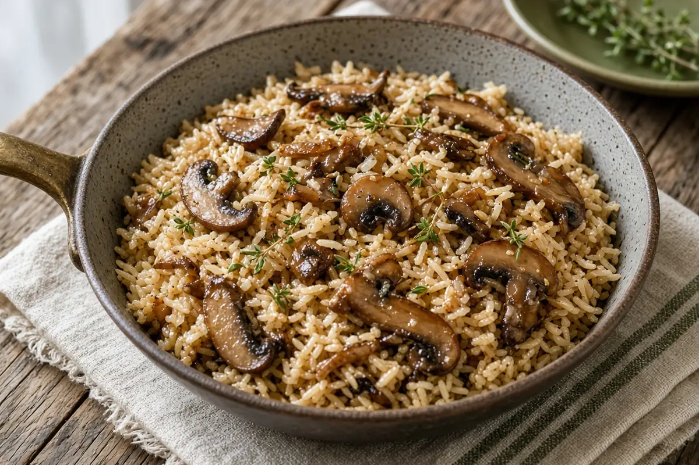

Mushroom Rice Pilaf
Long-grain rice simmered with buttery sautéed mixed mushrooms, shallot, garlic, thyme, and a splash of dry sherry.

Adapted from aspicyperspective.com
8 servings
By
Yield: 8 servings
Prep:
Cook:
Total:
Difficulty: Easy
Ingredients
- 1 lb mixed mushrooms, thinly sliced
- 2 Tbsp butter
- 1/4 cup chopped shallots
- 4 cloves garlic, minced
- 1 tsp dried thyme
- 1 1/4 cups long grain rice
- 2 1/2 cups vegetable broth (or water)
- 1/3 cup dry sherry
- 1 tsp salt, plus more to taste
- 1/4 tsp ground black pepper
Instructions
- Melt the butter in a large lidded sauté pan over medium heat. Add the shallots, garlic, and thyme and cook until soft, about 3 minutes.
- Stir in the mushrooms and cook 10 minutes, until softened.
- Add the rice, broth, sherry, salt, and pepper. Cover and bring to a simmer.
- Lower the heat a little and cook 20 minutes, until the liquid is absorbed and small steam holes dot the top.
- Take the pan off the heat and let it rest, covered, 10 minutes. Fluff with a fork and season to taste.
Notes: Trim any tough stems before slicing. Chicken broth works in place of vegetable broth.